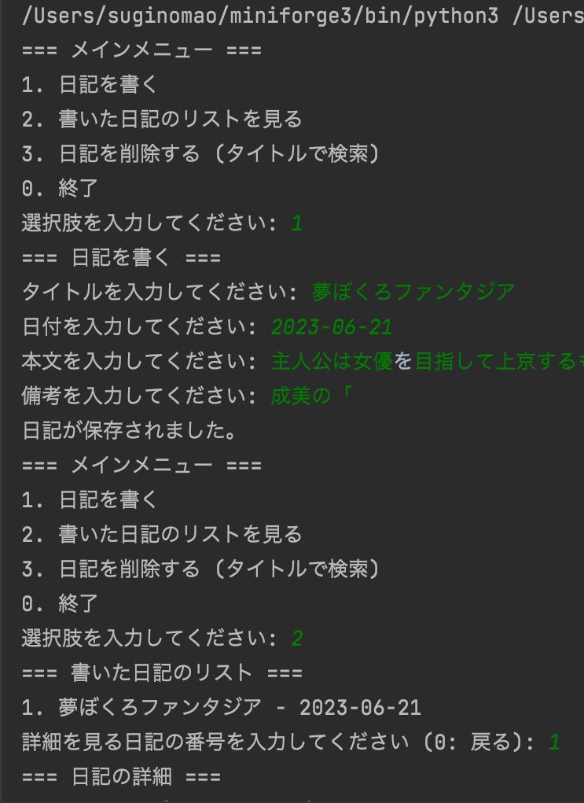
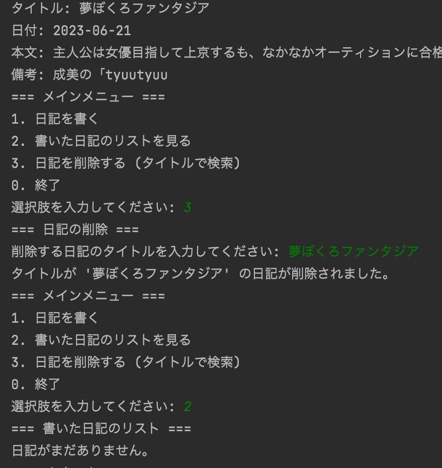
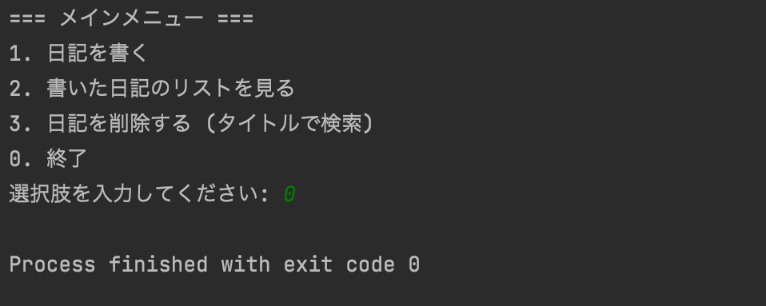

chat GPTの助けを借りてpythonでシステムを作ってみる
- import os
- class Diary:
- def __init__(self):
- self.entries = []
- def add_entry(self, entry):
- self.entries.append(entry)
- def get_entries(self):
- return self.entries
- def save_entries_to_file(self, filename):
- with open(filename, 'w') as file:
- for entry in self.entries:
- file.write(entry.to_string() + '\n')
- def load_entries_from_file(self, filename):
- self.entries = []
- if os.path.exists(filename):
- with open(filename, 'r') as file:
- for line in file:
- entry = DiaryEntry.from_string(line)
- if entry:
- self.add_entry(entry)
- def remove_entry_by_title(self, title_to_remove):
- self.entries = [entry for entry in self.entries if entry.title != title_to_remove]
- # ... (existing code)
- class DiaryEntry:
- def __init__(self, title, date, content, notes):
- self.title = title
- self.date = date
- self.content = content
- self.notes = notes
- def to_string(self):
- return f"{self.title},{self.date},{self.content},{self.notes}"
- @staticmethod
- def from_string(entry_string):
- fields = entry_string.strip().split(',')
- if len(fields) == 4:
- return DiaryEntry(fields[0], fields[1], fields[2], fields[3])
- return None
- def main_menu(diary):
- while True:
- print("=== メインメニュー ===")
- print("1. 日記を書く")
- print("2. 書いた日記のリストを見る")
- print("3. 日記を削除する (タイトルで検索)")
- print("0. 終了")
- choice = input("選択肢を入力してください: ")
- if choice == '1':
- write_diary(diary)
- elif choice == '2':
- view_entries(diary)
- elif choice == '3':
- remove_entry_by_title(diary)
- elif choice == '0':
- break
- else:
- print("無効な選択肢です。もう一度選んでください。")
- def write_diary(diary):
- print("=== 日記を書く ===")
- title = input("タイトルを入力してください: ")
- date = input("日付を入力してください: ")
- content = input("本文を入力してください: ")
- notes = input("備考を入力してください: ")
- entry = DiaryEntry(title, date, content, notes)
- diary.add_entry(entry)
- print("日記が保存されました。")
- def view_entries(diary):
- print("=== 書いた日記のリスト ===")
- entries = diary.get_entries()
- if not entries:
- print("日記がまだありません。")
- return
- for index, entry in enumerate(entries, start=1):
- print(f"{index}. {entry.title} - {entry.date}")
- choice = input("詳細を見る日記の番号を入力してください (0: 戻る): ")
- if choice == '0':
- return
- try:
- index = int(choice) - 1
- entry = entries[index]
- view_entry_details(entry)
- except (ValueError, IndexError):
- print("無効な選択肢です。もう一度選んでください。")
- def view_entry_details(entry):
- print("=== 日記の詳細 ===")
- print(f"タイトル: {entry.title}")
- print(f"日付: {entry.date}")
- print(f"本文: {entry.content}")
- print(f"備考: {entry.notes}")
- def remove_entry_by_title(diary):
- print("=== 日記の削除 ===")
- title_to_remove = input("削除する日記のタイトルを入力してください: ")
- diary.remove_entry_by_title(title_to_remove)
- print(f"タイトルが '{title_to_remove}' の日記が削除されました。")
- # メインの実行部分
- def main():
- diary = Diary()
- filename = 'diary_entries.txt' # ファイル名は必要に応じて変更してください
- diary.load_entries_from_file(filename)
- main_menu(diary)
- diary.save_entries_to_file(filename)
- if __name__ == '__main__':
- main()
イメージ画像



前のページに戻る